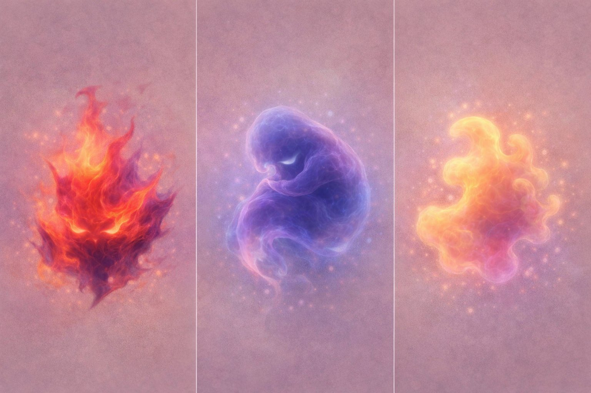

En historie om Alma, der opdager at hendes stemme ikke er noget hun skal finde — men noget hun skal turde bruge.
Bankeren — fuldt udviklet

Ild. Skikkelse. Sky. Bankeren har altid været der — nu kender du den.
Hvornår er et nej det rigtige? Og hvad sker der inden i, når man ikke tør sige det?
Presset fra gruppen. Ønsket om at høre til. Og det der banker — og siger noget andet.
At stå alene er ikke det samme som at være alene. Alma lærer forskellen.
Det startede med en fornemmelse.
Ikke en tanke. Ikke en beslutning. Bare noget, der sad i maven og sagde: vent.
Alma kendte den godt. Den bankede tit, når noget ikke stemte. Hun var bare ikke altid god til at lytte til den.
— Uddrag fra "Når verden taler tilbage" (under udgivelse)
Forlag eller samarbejde?
Vi er åbne for dialog om udgivelse og samarbejde.